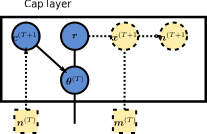
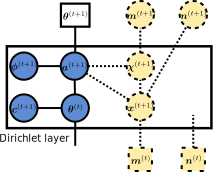
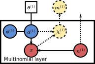

Module gabenet.multinomial
Expand source code
from typing import Optional
import haiku as hk
from jax import random
import jax.numpy as jnp
from tensorflow_probability.substrates import jax as tfp # type: ignore
from tensor_annotations.axes import Batch, Channels, Features
from tensor_annotations.jax import Array0, Array1, Array2, Array3, float32, uint32
from gabenet.layers import _Module, BaseMiddleLayer, BaseObservedLayer
from gabenet.random import (
chinese_restaurant_table,
gamma,
posterior_gamma_chinese_restaurant_table,
)
from gabenet.utils import to_snake_string
import logging
tfd = tfp.distributions
class MultinomialLayer(BaseObservedLayer):
r"""Bottom layer of deep multinomial network `gabenet.nets.MultinomialDirichletBelieve`.
Models the multinomial draws and the Dirichlet distributed weights.
.. figure:: figures/multinomial_layer.svg
Architecture sketch of distributions in `MultinomialLayer`.
This layer implements the following generative model:
Given an incoming Dirichlet distributed \(\theta_{ik}^{(1)}\) from the layer above,
generate forward samples
$$
\phi_{kj}^{(1)} \sim \mathrm{Dir}([\eta,\dots,\eta]), \\
a_{ij}^{(1)} = \sum_{k=1}^{K_{1}} \theta_{ik}^{(1)} \phi_{kj}^{(1)}, \\
x_{ij}^{(1)} \sim \mathrm{Mult}(n_i^{(1)}, \{a_{ij}^{(1)}\}_j),
$$
where \(n_i^{(1)}\) are the number of multinomial draws, \(K_1\) are the number of latent states (`input_size`), \(i\) refers to
sample, \(j\) to a feature coming out of the layer (`output_size` in total), and
\(k\) a latent state/topic coming into the layer (`input_size` in total). During
inference, the training data \(x_{ij}^{(1)}\) coming from
\(n_i^{(1)} \equiv \sum_{j} x_{ij}^{(1)} \) multinomial draws are both assumed to be
fixed and known.
"""
def set_training(self, is_training: bool) -> None:
"""Toggle training mode."""
super().set_training(is_training)
# Phi is fixed during inference.
if not self.is_training:
self.frozen_ = frozenset(self.frozen).union(["phi"])
def forward(
self, theta: Array2[float32, Batch, Channels]
) -> Array2[uint32, Batch, Features]:
r"""Do a ancestral sampling step generating samples
\(\{\phi_{kj}^{(1)}, x_{ij}^{(1)}\}_{i,j,k} \mid \theta_{ik}^{(1)} \).
Args:
n_trials: Number of draws from multinomial distribution.
"""
m_samples = jnp.shape(theta)[0]
n_trials = jnp.arange(m_samples, 2 * m_samples, dtype=jnp.float32)
logging.warning(f"Number of trials is fixed at n_trials = {n_trials}")
activation = self.forward_activation(theta)
normalisation_constant = jnp.sum(activation, axis=1, keepdims=True)
p_dirichlet = jnp.where(
normalisation_constant == 0, 0, activation / normalisation_constant
)
key = hk.next_rng_key()
x_ij = tfd.Multinomial(total_count=n_trials, probs=p_dirichlet).sample(seed=key)
return x_ij
def upward(self, x: Array2[uint32, Batch, Features]):
r"""Gibbs sample \( \phi^{(1)}_{kj} \) and propagate \( \{m_{ik}^{(1)}, n_i^{(1)} \equiv \sum_j x^{(1)}_{ij} \} \) upward.
See `gabenet.layers.BaseObservedLayer.upward()` for details."""
m_ik = super().upward(x)
# Number of draws (per sample) of observation `x`.
n_i = jnp.sum(x, axis=1)
return m_ik, n_i
def joint_log_prob(
self,
theta_tplus1: Array2[float32, Batch, Channels],
x_observed: Array2[uint32, Batch, Features],
) -> Array0[float32]:
"""Joint likelihood of data, state, and parameters.
Args:
theta_tplus1: Hidden units from the layer above.
x_observed: Data matrix of shape (m_samples, n_features).
"""
alpha = jnp.full(
shape=(1, self.output_size), fill_value=self.eta, dtype=jnp.float32
)
phi_shape = (self.input_size, self.output_size)
phi = self._get("phi", shape=phi_shape)
log_p_phi = tfd.Dirichlet(concentration=alpha).log_prob(phi)
activation = theta_tplus1 @ phi
n_trials = jnp.sum(x_observed, axis=1, dtype=jnp.float32)
log_p_x = tfd.Multinomial(total_count=n_trials, probs=activation).log_prob(
x_observed.astype(jnp.float32) # type: ignore
)
log_prob = log_p_phi.sum() + log_p_x.sum()
return log_prob
def log_prob(self, x_observed: Array2[uint32, Batch, Features]):
"""Log-probability of the observations."""
m_samples = x_observed.shape[0]
theta_shape = (m_samples, self.input_size)
phi_shape = (self.input_size, self.output_size)
theta = self._get("theta", theta_shape)
phi = self._get("phi", phi_shape) # type: ignore
activation = theta @ phi
n_trials = jnp.sum(x_observed, axis=1, dtype=jnp.float32)
return (
tfd.Multinomial(total_count=n_trials, probs=activation)
.log_prob(x_observed.astype(jnp.float32)) # type: ignore
.sum()
)
class DirichletLayer(BaseMiddleLayer):
r"""Intermediate layers of the deep multinomial network `gabenet.nets.MultinomialDirichletBelieve`.
WARNING: Only to be used in combination with a `MultinomialLayer` and `CapLayer`.
.. figure:: figures/multinomial_dirichlet_layer.svg
Mathematical background of distributions underlying this layer.
Given an incoming Dirichlet distributed \(\theta_{ik}^{(t+1)}\) from the layer above
(layer \(t+1\)), generate forward samples using the following set of conditional
distributions:
$$
c^{(t+1)} \sim \mathrm{Gam}(e_0, f_0), \\
\phi_{kj}^{(t+1)} \sim \mathrm{Dir}([\eta,\dots,\eta]), \\
a_{ij}^{(t+1)} = \sum_{k=1}^{K_{t+1}} \theta_{ik}^{(t+1)} \phi_{kj}^{(t+1)}, \\
\theta_{ij}^{(t)} \sim \mathrm{Dir}(\{c^{(t+1)} a_{ij}^{(t+1)}\}_j),
$$
where \(K_t\) are this layer's number of latent states (`output_size`) and
\(K_{t+1}\) refers to the number of latent states (`input_size`) of the layer
above, with \(t\) the layer index (namely, this layer). Here, \(i\) refers to a
sample, \(j\) to a feature coming out of the layer (`output_size` in total), and
\(k\) a latent state/topic coming into the layer (`input_size` in total).
"""
def forward(
self, theta_tplus1: Array2[float32, Batch, Channels]
) -> Array2[float32, Batch, Features]:
r"""Do a ancestral sampling step generating a set of samples
\(\{ c^{(t+1)}, \phi_{kj}^{(t+1)}, \theta_{ij}^{(t)} \}_{i,j,k} \mid \theta_{ik}^{(t+1)}\).
"""
m_samples = theta_tplus1.shape[0]
# Sample and save state phi.
alpha = jnp.full(
shape=(1, self.input_size), fill_value=self.eta, dtype=jnp.float32
)
phi: Array2[float32, Channels, Features] = random.dirichlet(
hk.next_rng_key(),
alpha=alpha,
shape=(self.n_components,),
) # type: ignore
self._set("phi", phi)
c: Array0[float32] = gamma(hk.next_rng_key(), self.e_0, self.f_0, shape=())
self._set("c", c)
rate: Array3[float32, Batch, Features, Channels] = (
c * theta_tplus1[:, jnp.newaxis, :] * phi.T[jnp.newaxis, ...]
)
self._set("rate", rate)
activation = jnp.sum(rate, axis=-1)
theta: Array2[float32, Batch, Features] = random.dirichlet(
hk.next_rng_key(), activation, shape=(m_samples,)
) # type: ignore
self._set("theta", theta)
# Allocate a state for m(t) by initialising with arbitrary values.
# These values are not used since `upward` immediately overwrite the values.
m_init = jnp.zeros(shape=(m_samples, self.input_size), dtype=jnp.uint32)
self._set("m", m_init)
return theta
def joint_log_prob(self, theta_tplus1: Array2[float32, Batch, Channels]) -> tuple:
r"""Joint likelihood of data, state, and parameters.
Args:
theta_tplus1: The hidden units \(\theta^{(t+1)}\) coming into the layer.
Returns:
A pair, the joint log-likelihood and the parameters coming out of the layer.
"""
m_samples = theta_tplus1.shape[0]
alpha = jnp.full(
shape=(1, self.input_size), fill_value=self.eta, dtype=jnp.float32
)
phi_shape = (self.n_components, self.input_size)
phi = self._get("phi", phi_shape)
log_phi = tfd.Dirichlet(concentration=alpha).log_prob(phi)
c = self._get("c", shape=())
log_c = tfd.Gamma(concentration=self.e_0, rate=self.f_0).log_prob(c)
activation = theta_tplus1 @ phi
theta_shape = (m_samples, self.input_size)
theta = self._get("theta", theta_shape)
log_theta = tfd.Dirichlet(concentration=c * activation).log_prob(theta)
log_prob = log_phi.sum() + log_c + log_theta.sum()
return log_prob, theta
def upward( # type: ignore
self,
m_previous: Array2[uint32, Batch, Features],
n_previous: Array1[uint32, Batch],
) -> tuple[Array2[uint32, Batch, Channels], Array1[uint32, Batch]]:
r"""Propagate latent counts and rate factors upward.
$$
x_{ij}^{(t+1)} \sim \mathrm{CRT}[m_{ij}^{(t)}, c^{(t+1)} a_{ij}^{(t+1)}], \\
\chi_{ijk}^{(t+1)} \sim \mathrm{Mult}[x_{ij}^{(t+1)}, \{θ_{ik}^{(t+1)}ϕ_{kj}^{(t+1)}\}_k], \\
\phi_{kj}^{(t+1)} \sim \mathrm{Dir}[\{\eta + \sum_{i} \chi_{ijk}^{(t+1)}\}_j], \\
c^{(t+1)} \sim \mathrm{PGCRT}(\sum_{i} n_{i}^{(t+1)}, \{n_i^{(t)}\}_{i}, e_0, f_0).
$$
"""
self._set("m", m_previous)
m_ik = super().upward(m_previous)
n_i = jnp.sum(m_ik, axis=1)
if "c" not in self.frozen_:
c: Array0[float32] = posterior_gamma_chinese_restaurant_table(
hk.next_rng_key(), m=n_i, n=n_previous, a=self.e_0, b=self.f_0 # type: ignore
)
self._set("c", c)
return m_ik, n_i
def downward(
self, theta_tplus1: Array2[float32, Batch, Channels]
) -> tuple[Array2[float32, Batch, Features]]:
r"""Gibbs sample downward.
$$
a_{ij}^{(t+1)} = \sum_{k=1}^{K_{t+1}} \theta_{ik}^{(t+1)} \phi_{kj}^{(t+1)}, \\
\theta_{ij}^{(t)} \sim \mathrm{Dir}[\{c^{(t+1)} a_{ij}^{(t+1)} + m_{ij}^{(t)}\}_{j}]. \\
$$
"""
m_samples = theta_tplus1.shape[0]
phi_shape = (self.n_components, self.input_size)
phi: Array2[float32, Channels, Features] = self._get("phi", phi_shape) # type: ignore
c: Array0[float32] = self._get("c", shape=())
rate = c * theta_tplus1[:, jnp.newaxis, :] * phi.T[jnp.newaxis, ...]
self._set("rate", rate)
if "theta" not in self.frozen_:
activation = jnp.sum(rate, axis=-1)
m_previous: Array2[uint32, Batch, Features] = self._get("m", shape=(m_samples, self.input_size)) # type: ignore
theta_alpha = activation + m_previous
theta = random.dirichlet(hk.next_rng_key(), theta_alpha, shape=(m_samples,))
self._set("theta", theta)
else:
theta = self._get("theta", shape=(m_samples, self.n_components))
return (theta,)
class CapLayer(_Module):
r"""Top layer of the deep multinomial network `gabenet.nets.MultinomialDirichletBelieve`.
WARNING: Only to be used in combination with a `MultinomialLayer` (and optionally a
`DirichletLayer`).
.. figure:: figures/multinomial_cap_layer.svg
Mathematical background of distributions underlying this layer.
Forward samples are generated by the following set of conditional distributions:
$$
r_j \sim \mathrm{Dir}(\{\gamma_0 / K_T\}_j), \\
c^{(T+1)} \sim \mathrm{Gam}(e_0, f_0), \\
\theta_{ij}^{(T)} \sim \mathrm{Dir}(\{c^{(T+1)} r_j\}_j),
$$
where \(K_T\) (`input_size`) are the number of topics, \(i\) refers to sample, \(j\) to
a latent state, and the superscript refers to the layer index \(T\) (top most
layer). The dashed distributions (see figure) refer to latent counts \(x_{ij}^{(T+1)}\) and
\(n_i^{(T+1)}\) correspond to the number of draws of the augmented multinomial
distribution used during Gibbs sampling.
"""
def __init__(
self,
input_size: int,
name: Optional[str] = None,
gamma_0: float = 1.0,
e_0: float = 1.0,
f_0: float = 1.0,
frozen: Optional[tuple[str]] = None,
is_training: bool = True,
):
r"""
Args:
input_size: Number of latent states/topics \(K\) in this layers. Or,
equivalently, the number of features generated by (coming out of) this
layer.
name: Name of this layer.
gamma_0: Shape hyperparameter \(\gamma_0\) for top activation.
e_0: Shape hyperparameter \(e_0\) of activation rate.
f_0: Rate hyperparameter \(f_0\) of activation rate.
is_training: Is the model in training or in inference mode?
"""
if name is None:
name = to_snake_string(self.__class__.__name__)
super().__init__(name=name, frozen=frozen)
self.input_size = input_size
self.gamma_0 = jnp.array(gamma_0)
self.e_0 = jnp.array(e_0)
self.f_0 = jnp.array(f_0)
self.set_training(is_training)
def set_training(self, is_training: bool) -> None:
"""Toggle training mode."""
super().set_training(is_training)
if not self.is_training:
self.frozen_ = frozenset(self.frozen).union(["r", "c"])
def forward(self, m_samples: int) -> Array2[float32, Batch, Features]:
r"""Do ancestral sampling step generating the set of samples
\(\{r_j, \theta_{ij}^{(T)}, c^{(T+1)}\}_{i,j}\)."""
alpha = jnp.full(
shape=(self.input_size,), fill_value=self.gamma_0 / self.input_size
)
r: Array1[float32, Features] = random.dirichlet(hk.next_rng_key(), alpha) # type: ignore
self._set("r", r)
c: Array0[float32] = gamma(hk.next_rng_key(), self.e_0, self.f_0, shape=())
self._set("c", c)
theta: Array2[float32, Batch, Features] = random.dirichlet(
hk.next_rng_key(),
c * r[jnp.newaxis, ...],
shape=(m_samples,),
) # type: ignore
self._set("theta", theta)
return theta
def upward(
self,
m_previous: Array2[uint32, Batch, Features],
n_previous: Array1[uint32, Batch],
):
r"""Posterior sample upward based on incoming \( \{m_{ik}^{(T)}, n_i^{(T)} \} \).
$$
x_{ij}^{(T+1)} \sim \mathrm{CRT}[m_{ij}^{(T)}, r_j], \\
n_i^{(T+1)} = \sum_{j=1}^{K_T} x_{ij}^{(T+1)}, \\
\{r_j\}_j \sim \mathrm{Dir}(\{\gamma_0/K_T + \sum_i x_{ij}^{(T+1)}\}_j), \\
c^{(T+1)} \sim \mathrm{PGCRT}(\sum_i n_i^{(T+1)}, \{ n_i^{(T)} \}_i, e_0, f_0),\\
$$
where PGCRT is the Gamma-Chinese restaurant table posterior (see
`gabenet.random.posterior_gamma_chinese_restaurant_table`).
"""
if "r" not in self.frozen_:
r: Array1[float32, Features] = self._get("r", shape=(self.input_size,)) # type: ignore
c = self._get("c", shape=())
x_ij: Array2[uint32, Batch, Features] = chinese_restaurant_table(
hk.next_rng_key(), n=m_previous, r=r[jnp.newaxis, ...] * c
)
n_i = jnp.sum(x_ij, axis=1)
a = self.gamma_0 / self.input_size + jnp.sum(x_ij, axis=0)
r = random.dirichlet(hk.next_rng_key(), a)
c = posterior_gamma_chinese_restaurant_table(
hk.next_rng_key(), n_i, n_previous, self.e_0, self.f_0
)
self._set("r", r)
self._set("c", c)
return m_previous, None
def downward(
self,
m_previous: Array2[uint32, Batch, Features],
_,
) -> tuple[Array2[float32, Batch, Features]]:
r"""Posterior sample downward.
$$
\theta_{ij}^{(T)} \sim \mathrm{Dir}[\{c^{(T+1)} r_{j}^{(T+1)} + m_{ij}^{(T)}\}_{j}].
$$
"""
m_samples = m_previous.shape[0]
if "theta" not in self.frozen_:
# r: Array1[float32, Features] = self._get("r", shape=(self.input_size,)) # type: ignore
activation: Array2[float32, Batch, Features] = self._get("r", shape=(self.input_size,))[jnp.newaxis, ...] # type: ignore
c: Array0[float32] = self._get("c", shape=())
theta_alpha = c * activation + m_previous
theta: Array2[float32, Batch, Features] = random.dirichlet(
hk.next_rng_key(), theta_alpha, shape=(m_samples,)
)
self._set("theta", theta)
else:
theta_shape = (m_samples, self.input_size)
theta = self._get("theta", shape=theta_shape)
return (theta,)
def joint_log_prob(self, m_samples: int):
"""Joint likelihood of data, state, and parameters."""
r = self._get("r", shape=(self.input_size,))
c = self._get("c", shape=())
theta = self._get("theta", (m_samples, self.input_size))
alpha = jnp.full((self.input_size,), self.gamma_0 / self.input_size)
log_p_r = tfd.Dirichlet(concentration=alpha).log_prob(r)
log_p_c = tfd.Gamma(concentration=self.e_0, rate=self.f_0).log_prob(c)
log_p_theta = tfd.Dirichlet(concentration=c * r[jnp.newaxis, ...]).log_prob(
theta
)
log_prob = jnp.sum(log_p_r) + jnp.sum(log_p_c) + jnp.sum(log_p_theta)
return log_prob, thetaClasses
class CapLayer (input_size: int, name: Optional[str] = None, gamma_0: float = 1.0, e_0: float = 1.0, f_0: float = 1.0, frozen: Optional[tuple[str]] = None, is_training: bool = True)-
Top layer of the deep multinomial network
MultinomialDirichletBelieve.WARNING: Only to be used in combination with a
MultinomialLayer(and optionally aDirichletLayer).
Forward samples are generated by the following set of conditional distributions: r_j \sim \mathrm{Dir}(\{\gamma_0 / K_T\}_j), \\ c^{(T+1)} \sim \mathrm{Gam}(e_0, f_0), \\ \theta_{ij}^{(T)} \sim \mathrm{Dir}(\{c^{(T+1)} r_j\}_j), where K_T (
input_size) are the number of topics, i refers to sample, j to a latent state, and the superscript refers to the layer index T (top most layer). The dashed distributions (see figure) refer to latent counts x_{ij}^{(T+1)} and n_i^{(T+1)} correspond to the number of draws of the augmented multinomial distribution used during Gibbs sampling.Args
input_size- Number of latent states/topics K in this layers. Or, equivalently, the number of features generated by (coming out of) this layer.
name- Name of this layer.
gamma_0- Shape hyperparameter \gamma_0 for top activation.
e_0- Shape hyperparameter e_0 of activation rate.
f_0- Rate hyperparameter f_0 of activation rate.
is_training- Is the model in training or in inference mode?
Expand source code
class CapLayer(_Module): r"""Top layer of the deep multinomial network `gabenet.nets.MultinomialDirichletBelieve`. WARNING: Only to be used in combination with a `MultinomialLayer` (and optionally a `DirichletLayer`). .. figure:: figures/multinomial_cap_layer.svg Mathematical background of distributions underlying this layer. Forward samples are generated by the following set of conditional distributions: $$ r_j \sim \mathrm{Dir}(\{\gamma_0 / K_T\}_j), \\ c^{(T+1)} \sim \mathrm{Gam}(e_0, f_0), \\ \theta_{ij}^{(T)} \sim \mathrm{Dir}(\{c^{(T+1)} r_j\}_j), $$ where \(K_T\) (`input_size`) are the number of topics, \(i\) refers to sample, \(j\) to a latent state, and the superscript refers to the layer index \(T\) (top most layer). The dashed distributions (see figure) refer to latent counts \(x_{ij}^{(T+1)}\) and \(n_i^{(T+1)}\) correspond to the number of draws of the augmented multinomial distribution used during Gibbs sampling. """ def __init__( self, input_size: int, name: Optional[str] = None, gamma_0: float = 1.0, e_0: float = 1.0, f_0: float = 1.0, frozen: Optional[tuple[str]] = None, is_training: bool = True, ): r""" Args: input_size: Number of latent states/topics \(K\) in this layers. Or, equivalently, the number of features generated by (coming out of) this layer. name: Name of this layer. gamma_0: Shape hyperparameter \(\gamma_0\) for top activation. e_0: Shape hyperparameter \(e_0\) of activation rate. f_0: Rate hyperparameter \(f_0\) of activation rate. is_training: Is the model in training or in inference mode? """ if name is None: name = to_snake_string(self.__class__.__name__) super().__init__(name=name, frozen=frozen) self.input_size = input_size self.gamma_0 = jnp.array(gamma_0) self.e_0 = jnp.array(e_0) self.f_0 = jnp.array(f_0) self.set_training(is_training) def set_training(self, is_training: bool) -> None: """Toggle training mode.""" super().set_training(is_training) if not self.is_training: self.frozen_ = frozenset(self.frozen).union(["r", "c"]) def forward(self, m_samples: int) -> Array2[float32, Batch, Features]: r"""Do ancestral sampling step generating the set of samples \(\{r_j, \theta_{ij}^{(T)}, c^{(T+1)}\}_{i,j}\).""" alpha = jnp.full( shape=(self.input_size,), fill_value=self.gamma_0 / self.input_size ) r: Array1[float32, Features] = random.dirichlet(hk.next_rng_key(), alpha) # type: ignore self._set("r", r) c: Array0[float32] = gamma(hk.next_rng_key(), self.e_0, self.f_0, shape=()) self._set("c", c) theta: Array2[float32, Batch, Features] = random.dirichlet( hk.next_rng_key(), c * r[jnp.newaxis, ...], shape=(m_samples,), ) # type: ignore self._set("theta", theta) return theta def upward( self, m_previous: Array2[uint32, Batch, Features], n_previous: Array1[uint32, Batch], ): r"""Posterior sample upward based on incoming \( \{m_{ik}^{(T)}, n_i^{(T)} \} \). $$ x_{ij}^{(T+1)} \sim \mathrm{CRT}[m_{ij}^{(T)}, r_j], \\ n_i^{(T+1)} = \sum_{j=1}^{K_T} x_{ij}^{(T+1)}, \\ \{r_j\}_j \sim \mathrm{Dir}(\{\gamma_0/K_T + \sum_i x_{ij}^{(T+1)}\}_j), \\ c^{(T+1)} \sim \mathrm{PGCRT}(\sum_i n_i^{(T+1)}, \{ n_i^{(T)} \}_i, e_0, f_0),\\ $$ where PGCRT is the Gamma-Chinese restaurant table posterior (see `gabenet.random.posterior_gamma_chinese_restaurant_table`). """ if "r" not in self.frozen_: r: Array1[float32, Features] = self._get("r", shape=(self.input_size,)) # type: ignore c = self._get("c", shape=()) x_ij: Array2[uint32, Batch, Features] = chinese_restaurant_table( hk.next_rng_key(), n=m_previous, r=r[jnp.newaxis, ...] * c ) n_i = jnp.sum(x_ij, axis=1) a = self.gamma_0 / self.input_size + jnp.sum(x_ij, axis=0) r = random.dirichlet(hk.next_rng_key(), a) c = posterior_gamma_chinese_restaurant_table( hk.next_rng_key(), n_i, n_previous, self.e_0, self.f_0 ) self._set("r", r) self._set("c", c) return m_previous, None def downward( self, m_previous: Array2[uint32, Batch, Features], _, ) -> tuple[Array2[float32, Batch, Features]]: r"""Posterior sample downward. $$ \theta_{ij}^{(T)} \sim \mathrm{Dir}[\{c^{(T+1)} r_{j}^{(T+1)} + m_{ij}^{(T)}\}_{j}]. $$ """ m_samples = m_previous.shape[0] if "theta" not in self.frozen_: # r: Array1[float32, Features] = self._get("r", shape=(self.input_size,)) # type: ignore activation: Array2[float32, Batch, Features] = self._get("r", shape=(self.input_size,))[jnp.newaxis, ...] # type: ignore c: Array0[float32] = self._get("c", shape=()) theta_alpha = c * activation + m_previous theta: Array2[float32, Batch, Features] = random.dirichlet( hk.next_rng_key(), theta_alpha, shape=(m_samples,) ) self._set("theta", theta) else: theta_shape = (m_samples, self.input_size) theta = self._get("theta", shape=theta_shape) return (theta,) def joint_log_prob(self, m_samples: int): """Joint likelihood of data, state, and parameters.""" r = self._get("r", shape=(self.input_size,)) c = self._get("c", shape=()) theta = self._get("theta", (m_samples, self.input_size)) alpha = jnp.full((self.input_size,), self.gamma_0 / self.input_size) log_p_r = tfd.Dirichlet(concentration=alpha).log_prob(r) log_p_c = tfd.Gamma(concentration=self.e_0, rate=self.f_0).log_prob(c) log_p_theta = tfd.Dirichlet(concentration=c * r[jnp.newaxis, ...]).log_prob( theta ) log_prob = jnp.sum(log_p_r) + jnp.sum(log_p_c) + jnp.sum(log_p_theta) return log_prob, thetaAncestors
- gabenet.layers._Module
- haiku._src.module.Module
Methods
def downward(self, m_previous: tensor_annotations.jax.Array2[tensor_annotations.jax.uint32, tensor_annotations.axes.Batch, tensor_annotations.axes.Features], _) ‑> tuple[tensor_annotations.jax.Array2[tensor_annotations.jax.float32, tensor_annotations.axes.Batch, tensor_annotations.axes.Features]]-
Posterior sample downward.
\theta_{ij}^{(T)} \sim \mathrm{Dir}[\{c^{(T+1)} r_{j}^{(T+1)} + m_{ij}^{(T)}\}_{j}].
Expand source code
def downward( self, m_previous: Array2[uint32, Batch, Features], _, ) -> tuple[Array2[float32, Batch, Features]]: r"""Posterior sample downward. $$ \theta_{ij}^{(T)} \sim \mathrm{Dir}[\{c^{(T+1)} r_{j}^{(T+1)} + m_{ij}^{(T)}\}_{j}]. $$ """ m_samples = m_previous.shape[0] if "theta" not in self.frozen_: # r: Array1[float32, Features] = self._get("r", shape=(self.input_size,)) # type: ignore activation: Array2[float32, Batch, Features] = self._get("r", shape=(self.input_size,))[jnp.newaxis, ...] # type: ignore c: Array0[float32] = self._get("c", shape=()) theta_alpha = c * activation + m_previous theta: Array2[float32, Batch, Features] = random.dirichlet( hk.next_rng_key(), theta_alpha, shape=(m_samples,) ) self._set("theta", theta) else: theta_shape = (m_samples, self.input_size) theta = self._get("theta", shape=theta_shape) return (theta,) def forward(self, m_samples: int) ‑> tensor_annotations.jax.Array2[tensor_annotations.jax.float32, tensor_annotations.axes.Batch, tensor_annotations.axes.Features]-
Do ancestral sampling step generating the set of samples \{r_j, \theta_{ij}^{(T)}, c^{(T+1)}\}_{i,j}.
Expand source code
def forward(self, m_samples: int) -> Array2[float32, Batch, Features]: r"""Do ancestral sampling step generating the set of samples \(\{r_j, \theta_{ij}^{(T)}, c^{(T+1)}\}_{i,j}\).""" alpha = jnp.full( shape=(self.input_size,), fill_value=self.gamma_0 / self.input_size ) r: Array1[float32, Features] = random.dirichlet(hk.next_rng_key(), alpha) # type: ignore self._set("r", r) c: Array0[float32] = gamma(hk.next_rng_key(), self.e_0, self.f_0, shape=()) self._set("c", c) theta: Array2[float32, Batch, Features] = random.dirichlet( hk.next_rng_key(), c * r[jnp.newaxis, ...], shape=(m_samples,), ) # type: ignore self._set("theta", theta) return theta def joint_log_prob(self, m_samples: int)-
Joint likelihood of data, state, and parameters.
Expand source code
def joint_log_prob(self, m_samples: int): """Joint likelihood of data, state, and parameters.""" r = self._get("r", shape=(self.input_size,)) c = self._get("c", shape=()) theta = self._get("theta", (m_samples, self.input_size)) alpha = jnp.full((self.input_size,), self.gamma_0 / self.input_size) log_p_r = tfd.Dirichlet(concentration=alpha).log_prob(r) log_p_c = tfd.Gamma(concentration=self.e_0, rate=self.f_0).log_prob(c) log_p_theta = tfd.Dirichlet(concentration=c * r[jnp.newaxis, ...]).log_prob( theta ) log_prob = jnp.sum(log_p_r) + jnp.sum(log_p_c) + jnp.sum(log_p_theta) return log_prob, theta def set_training(self, is_training: bool) ‑> None-
Toggle training mode.
Expand source code
def set_training(self, is_training: bool) -> None: """Toggle training mode.""" super().set_training(is_training) if not self.is_training: self.frozen_ = frozenset(self.frozen).union(["r", "c"]) def upward(self, m_previous: tensor_annotations.jax.Array2[tensor_annotations.jax.uint32, tensor_annotations.axes.Batch, tensor_annotations.axes.Features], n_previous: tensor_annotations.jax.Array1[tensor_annotations.jax.uint32, tensor_annotations.axes.Batch])-
Posterior sample upward based on incoming \{m_{ik}^{(T)}, n_i^{(T)} \} .
x_{ij}^{(T+1)} \sim \mathrm{CRT}[m_{ij}^{(T)}, r_j], \\ n_i^{(T+1)} = \sum_{j=1}^{K_T} x_{ij}^{(T+1)}, \\ \{r_j\}_j \sim \mathrm{Dir}(\{\gamma_0/K_T + \sum_i x_{ij}^{(T+1)}\}_j), \\ c^{(T+1)} \sim \mathrm{PGCRT}(\sum_i n_i^{(T+1)}, \{ n_i^{(T)} \}_i, e_0, f_0),\\
where PGCRT is the Gamma-Chinese restaurant table posterior (see
posterior_gamma_chinese_restaurant_table()).Expand source code
def upward( self, m_previous: Array2[uint32, Batch, Features], n_previous: Array1[uint32, Batch], ): r"""Posterior sample upward based on incoming \( \{m_{ik}^{(T)}, n_i^{(T)} \} \). $$ x_{ij}^{(T+1)} \sim \mathrm{CRT}[m_{ij}^{(T)}, r_j], \\ n_i^{(T+1)} = \sum_{j=1}^{K_T} x_{ij}^{(T+1)}, \\ \{r_j\}_j \sim \mathrm{Dir}(\{\gamma_0/K_T + \sum_i x_{ij}^{(T+1)}\}_j), \\ c^{(T+1)} \sim \mathrm{PGCRT}(\sum_i n_i^{(T+1)}, \{ n_i^{(T)} \}_i, e_0, f_0),\\ $$ where PGCRT is the Gamma-Chinese restaurant table posterior (see `gabenet.random.posterior_gamma_chinese_restaurant_table`). """ if "r" not in self.frozen_: r: Array1[float32, Features] = self._get("r", shape=(self.input_size,)) # type: ignore c = self._get("c", shape=()) x_ij: Array2[uint32, Batch, Features] = chinese_restaurant_table( hk.next_rng_key(), n=m_previous, r=r[jnp.newaxis, ...] * c ) n_i = jnp.sum(x_ij, axis=1) a = self.gamma_0 / self.input_size + jnp.sum(x_ij, axis=0) r = random.dirichlet(hk.next_rng_key(), a) c = posterior_gamma_chinese_restaurant_table( hk.next_rng_key(), n_i, n_previous, self.e_0, self.f_0 ) self._set("r", r) self._set("c", c) return m_previous, None
class DirichletLayer (input_size: int, output_size: int, name: Optional[str] = None, eta: float = 1.0, e_0: float = 1.0, f_0: float = 1.0, frozen: Optional[tuple[str]] = None, is_training: bool = True)-
Intermediate layers of the deep multinomial network
MultinomialDirichletBelieve.WARNING: Only to be used in combination with a
MultinomialLayerandCapLayer.
Given an incoming Dirichlet distributed \theta_{ik}^{(t+1)} from the layer above (layer t+1), generate forward samples using the following set of conditional distributions:
c^{(t+1)} \sim \mathrm{Gam}(e_0, f_0), \\ \phi_{kj}^{(t+1)} \sim \mathrm{Dir}([\eta,\dots,\eta]), \\ a_{ij}^{(t+1)} = \sum_{k=1}^{K_{t+1}} \theta_{ik}^{(t+1)} \phi_{kj}^{(t+1)}, \\ \theta_{ij}^{(t)} \sim \mathrm{Dir}(\{c^{(t+1)} a_{ij}^{(t+1)}\}_j),
where K_t are this layer's number of latent states (
output_size) and K_{t+1} refers to the number of latent states (input_size) of the layer above, with t the layer index (namely, this layer). Here, i refers to a sample, j to a feature coming out of the layer (output_sizein total), and k a latent state/topic coming into the layer (input_sizein total).Args
input_size- The number of latent variables/topics coming into the layer.
output_size- The number of features coming out of layer.
name- Name of this layer.
eta- Dirichlet hyperparameter \eta on weights.
e_0- Shape hyperparameter of activation scale.
f_0- Scale hyperparameter of activation scale.
is_training- Is the model in training or inference mode?
Expand source code
class DirichletLayer(BaseMiddleLayer): r"""Intermediate layers of the deep multinomial network `gabenet.nets.MultinomialDirichletBelieve`. WARNING: Only to be used in combination with a `MultinomialLayer` and `CapLayer`. .. figure:: figures/multinomial_dirichlet_layer.svg Mathematical background of distributions underlying this layer. Given an incoming Dirichlet distributed \(\theta_{ik}^{(t+1)}\) from the layer above (layer \(t+1\)), generate forward samples using the following set of conditional distributions: $$ c^{(t+1)} \sim \mathrm{Gam}(e_0, f_0), \\ \phi_{kj}^{(t+1)} \sim \mathrm{Dir}([\eta,\dots,\eta]), \\ a_{ij}^{(t+1)} = \sum_{k=1}^{K_{t+1}} \theta_{ik}^{(t+1)} \phi_{kj}^{(t+1)}, \\ \theta_{ij}^{(t)} \sim \mathrm{Dir}(\{c^{(t+1)} a_{ij}^{(t+1)}\}_j), $$ where \(K_t\) are this layer's number of latent states (`output_size`) and \(K_{t+1}\) refers to the number of latent states (`input_size`) of the layer above, with \(t\) the layer index (namely, this layer). Here, \(i\) refers to a sample, \(j\) to a feature coming out of the layer (`output_size` in total), and \(k\) a latent state/topic coming into the layer (`input_size` in total). """ def forward( self, theta_tplus1: Array2[float32, Batch, Channels] ) -> Array2[float32, Batch, Features]: r"""Do a ancestral sampling step generating a set of samples \(\{ c^{(t+1)}, \phi_{kj}^{(t+1)}, \theta_{ij}^{(t)} \}_{i,j,k} \mid \theta_{ik}^{(t+1)}\). """ m_samples = theta_tplus1.shape[0] # Sample and save state phi. alpha = jnp.full( shape=(1, self.input_size), fill_value=self.eta, dtype=jnp.float32 ) phi: Array2[float32, Channels, Features] = random.dirichlet( hk.next_rng_key(), alpha=alpha, shape=(self.n_components,), ) # type: ignore self._set("phi", phi) c: Array0[float32] = gamma(hk.next_rng_key(), self.e_0, self.f_0, shape=()) self._set("c", c) rate: Array3[float32, Batch, Features, Channels] = ( c * theta_tplus1[:, jnp.newaxis, :] * phi.T[jnp.newaxis, ...] ) self._set("rate", rate) activation = jnp.sum(rate, axis=-1) theta: Array2[float32, Batch, Features] = random.dirichlet( hk.next_rng_key(), activation, shape=(m_samples,) ) # type: ignore self._set("theta", theta) # Allocate a state for m(t) by initialising with arbitrary values. # These values are not used since `upward` immediately overwrite the values. m_init = jnp.zeros(shape=(m_samples, self.input_size), dtype=jnp.uint32) self._set("m", m_init) return theta def joint_log_prob(self, theta_tplus1: Array2[float32, Batch, Channels]) -> tuple: r"""Joint likelihood of data, state, and parameters. Args: theta_tplus1: The hidden units \(\theta^{(t+1)}\) coming into the layer. Returns: A pair, the joint log-likelihood and the parameters coming out of the layer. """ m_samples = theta_tplus1.shape[0] alpha = jnp.full( shape=(1, self.input_size), fill_value=self.eta, dtype=jnp.float32 ) phi_shape = (self.n_components, self.input_size) phi = self._get("phi", phi_shape) log_phi = tfd.Dirichlet(concentration=alpha).log_prob(phi) c = self._get("c", shape=()) log_c = tfd.Gamma(concentration=self.e_0, rate=self.f_0).log_prob(c) activation = theta_tplus1 @ phi theta_shape = (m_samples, self.input_size) theta = self._get("theta", theta_shape) log_theta = tfd.Dirichlet(concentration=c * activation).log_prob(theta) log_prob = log_phi.sum() + log_c + log_theta.sum() return log_prob, theta def upward( # type: ignore self, m_previous: Array2[uint32, Batch, Features], n_previous: Array1[uint32, Batch], ) -> tuple[Array2[uint32, Batch, Channels], Array1[uint32, Batch]]: r"""Propagate latent counts and rate factors upward. $$ x_{ij}^{(t+1)} \sim \mathrm{CRT}[m_{ij}^{(t)}, c^{(t+1)} a_{ij}^{(t+1)}], \\ \chi_{ijk}^{(t+1)} \sim \mathrm{Mult}[x_{ij}^{(t+1)}, \{θ_{ik}^{(t+1)}ϕ_{kj}^{(t+1)}\}_k], \\ \phi_{kj}^{(t+1)} \sim \mathrm{Dir}[\{\eta + \sum_{i} \chi_{ijk}^{(t+1)}\}_j], \\ c^{(t+1)} \sim \mathrm{PGCRT}(\sum_{i} n_{i}^{(t+1)}, \{n_i^{(t)}\}_{i}, e_0, f_0). $$ """ self._set("m", m_previous) m_ik = super().upward(m_previous) n_i = jnp.sum(m_ik, axis=1) if "c" not in self.frozen_: c: Array0[float32] = posterior_gamma_chinese_restaurant_table( hk.next_rng_key(), m=n_i, n=n_previous, a=self.e_0, b=self.f_0 # type: ignore ) self._set("c", c) return m_ik, n_i def downward( self, theta_tplus1: Array2[float32, Batch, Channels] ) -> tuple[Array2[float32, Batch, Features]]: r"""Gibbs sample downward. $$ a_{ij}^{(t+1)} = \sum_{k=1}^{K_{t+1}} \theta_{ik}^{(t+1)} \phi_{kj}^{(t+1)}, \\ \theta_{ij}^{(t)} \sim \mathrm{Dir}[\{c^{(t+1)} a_{ij}^{(t+1)} + m_{ij}^{(t)}\}_{j}]. \\ $$ """ m_samples = theta_tplus1.shape[0] phi_shape = (self.n_components, self.input_size) phi: Array2[float32, Channels, Features] = self._get("phi", phi_shape) # type: ignore c: Array0[float32] = self._get("c", shape=()) rate = c * theta_tplus1[:, jnp.newaxis, :] * phi.T[jnp.newaxis, ...] self._set("rate", rate) if "theta" not in self.frozen_: activation = jnp.sum(rate, axis=-1) m_previous: Array2[uint32, Batch, Features] = self._get("m", shape=(m_samples, self.input_size)) # type: ignore theta_alpha = activation + m_previous theta = random.dirichlet(hk.next_rng_key(), theta_alpha, shape=(m_samples,)) self._set("theta", theta) else: theta = self._get("theta", shape=(m_samples, self.n_components)) return (theta,)Ancestors
- BaseMiddleLayer
- gabenet.layers._Module
- haiku._src.module.Module
Methods
def downward(self, theta_tplus1: tensor_annotations.jax.Array2[tensor_annotations.jax.float32, tensor_annotations.axes.Batch, tensor_annotations.axes.Channels]) ‑> tuple[tensor_annotations.jax.Array2[tensor_annotations.jax.float32, tensor_annotations.axes.Batch, tensor_annotations.axes.Features]]-
Gibbs sample downward.
a_{ij}^{(t+1)} = \sum_{k=1}^{K_{t+1}} \theta_{ik}^{(t+1)} \phi_{kj}^{(t+1)}, \\ \theta_{ij}^{(t)} \sim \mathrm{Dir}[\{c^{(t+1)} a_{ij}^{(t+1)} + m_{ij}^{(t)}\}_{j}]. \\
Expand source code
def downward( self, theta_tplus1: Array2[float32, Batch, Channels] ) -> tuple[Array2[float32, Batch, Features]]: r"""Gibbs sample downward. $$ a_{ij}^{(t+1)} = \sum_{k=1}^{K_{t+1}} \theta_{ik}^{(t+1)} \phi_{kj}^{(t+1)}, \\ \theta_{ij}^{(t)} \sim \mathrm{Dir}[\{c^{(t+1)} a_{ij}^{(t+1)} + m_{ij}^{(t)}\}_{j}]. \\ $$ """ m_samples = theta_tplus1.shape[0] phi_shape = (self.n_components, self.input_size) phi: Array2[float32, Channels, Features] = self._get("phi", phi_shape) # type: ignore c: Array0[float32] = self._get("c", shape=()) rate = c * theta_tplus1[:, jnp.newaxis, :] * phi.T[jnp.newaxis, ...] self._set("rate", rate) if "theta" not in self.frozen_: activation = jnp.sum(rate, axis=-1) m_previous: Array2[uint32, Batch, Features] = self._get("m", shape=(m_samples, self.input_size)) # type: ignore theta_alpha = activation + m_previous theta = random.dirichlet(hk.next_rng_key(), theta_alpha, shape=(m_samples,)) self._set("theta", theta) else: theta = self._get("theta", shape=(m_samples, self.n_components)) return (theta,) def forward(self, theta_tplus1: tensor_annotations.jax.Array2[tensor_annotations.jax.float32, tensor_annotations.axes.Batch, tensor_annotations.axes.Channels]) ‑> tensor_annotations.jax.Array2[tensor_annotations.jax.float32, tensor_annotations.axes.Batch, tensor_annotations.axes.Features]-
Do a ancestral sampling step generating a set of samples \{ c^{(t+1)}, \phi_{kj}^{(t+1)}, \theta_{ij}^{(t)} \}_{i,j,k} \mid \theta_{ik}^{(t+1)}.
Expand source code
def forward( self, theta_tplus1: Array2[float32, Batch, Channels] ) -> Array2[float32, Batch, Features]: r"""Do a ancestral sampling step generating a set of samples \(\{ c^{(t+1)}, \phi_{kj}^{(t+1)}, \theta_{ij}^{(t)} \}_{i,j,k} \mid \theta_{ik}^{(t+1)}\). """ m_samples = theta_tplus1.shape[0] # Sample and save state phi. alpha = jnp.full( shape=(1, self.input_size), fill_value=self.eta, dtype=jnp.float32 ) phi: Array2[float32, Channels, Features] = random.dirichlet( hk.next_rng_key(), alpha=alpha, shape=(self.n_components,), ) # type: ignore self._set("phi", phi) c: Array0[float32] = gamma(hk.next_rng_key(), self.e_0, self.f_0, shape=()) self._set("c", c) rate: Array3[float32, Batch, Features, Channels] = ( c * theta_tplus1[:, jnp.newaxis, :] * phi.T[jnp.newaxis, ...] ) self._set("rate", rate) activation = jnp.sum(rate, axis=-1) theta: Array2[float32, Batch, Features] = random.dirichlet( hk.next_rng_key(), activation, shape=(m_samples,) ) # type: ignore self._set("theta", theta) # Allocate a state for m(t) by initialising with arbitrary values. # These values are not used since `upward` immediately overwrite the values. m_init = jnp.zeros(shape=(m_samples, self.input_size), dtype=jnp.uint32) self._set("m", m_init) return theta def joint_log_prob(self, theta_tplus1: tensor_annotations.jax.Array2[tensor_annotations.jax.float32, tensor_annotations.axes.Batch, tensor_annotations.axes.Channels]) ‑> tuple-
Joint likelihood of data, state, and parameters.
Args
theta_tplus1- The hidden units \theta^{(t+1)} coming into the layer.
Returns
A pair, the joint log-likelihood and the parameters coming out of the layer.
Expand source code
def joint_log_prob(self, theta_tplus1: Array2[float32, Batch, Channels]) -> tuple: r"""Joint likelihood of data, state, and parameters. Args: theta_tplus1: The hidden units \(\theta^{(t+1)}\) coming into the layer. Returns: A pair, the joint log-likelihood and the parameters coming out of the layer. """ m_samples = theta_tplus1.shape[0] alpha = jnp.full( shape=(1, self.input_size), fill_value=self.eta, dtype=jnp.float32 ) phi_shape = (self.n_components, self.input_size) phi = self._get("phi", phi_shape) log_phi = tfd.Dirichlet(concentration=alpha).log_prob(phi) c = self._get("c", shape=()) log_c = tfd.Gamma(concentration=self.e_0, rate=self.f_0).log_prob(c) activation = theta_tplus1 @ phi theta_shape = (m_samples, self.input_size) theta = self._get("theta", theta_shape) log_theta = tfd.Dirichlet(concentration=c * activation).log_prob(theta) log_prob = log_phi.sum() + log_c + log_theta.sum() return log_prob, theta def upward(self, m_previous: tensor_annotations.jax.Array2[tensor_annotations.jax.uint32, tensor_annotations.axes.Batch, tensor_annotations.axes.Features], n_previous: tensor_annotations.jax.Array1[tensor_annotations.jax.uint32, tensor_annotations.axes.Batch]) ‑> tuple[tensor_annotations.jax.Array2[tensor_annotations.jax.uint32, tensor_annotations.axes.Batch, tensor_annotations.axes.Channels], tensor_annotations.jax.Array1[tensor_annotations.jax.uint32, tensor_annotations.axes.Batch]]-
Propagate latent counts and rate factors upward.
x_{ij}^{(t+1)} \sim \mathrm{CRT}[m_{ij}^{(t)}, c^{(t+1)} a_{ij}^{(t+1)}], \\ \chi_{ijk}^{(t+1)} \sim \mathrm{Mult}[x_{ij}^{(t+1)}, \{θ_{ik}^{(t+1)}ϕ_{kj}^{(t+1)}\}_k], \\ \phi_{kj}^{(t+1)} \sim \mathrm{Dir}[\{\eta + \sum_{i} \chi_{ijk}^{(t+1)}\}_j], \\ c^{(t+1)} \sim \mathrm{PGCRT}(\sum_{i} n_{i}^{(t+1)}, \{n_i^{(t)}\}_{i}, e_0, f_0).
Expand source code
def upward( # type: ignore self, m_previous: Array2[uint32, Batch, Features], n_previous: Array1[uint32, Batch], ) -> tuple[Array2[uint32, Batch, Channels], Array1[uint32, Batch]]: r"""Propagate latent counts and rate factors upward. $$ x_{ij}^{(t+1)} \sim \mathrm{CRT}[m_{ij}^{(t)}, c^{(t+1)} a_{ij}^{(t+1)}], \\ \chi_{ijk}^{(t+1)} \sim \mathrm{Mult}[x_{ij}^{(t+1)}, \{θ_{ik}^{(t+1)}ϕ_{kj}^{(t+1)}\}_k], \\ \phi_{kj}^{(t+1)} \sim \mathrm{Dir}[\{\eta + \sum_{i} \chi_{ijk}^{(t+1)}\}_j], \\ c^{(t+1)} \sim \mathrm{PGCRT}(\sum_{i} n_{i}^{(t+1)}, \{n_i^{(t)}\}_{i}, e_0, f_0). $$ """ self._set("m", m_previous) m_ik = super().upward(m_previous) n_i = jnp.sum(m_ik, axis=1) if "c" not in self.frozen_: c: Array0[float32] = posterior_gamma_chinese_restaurant_table( hk.next_rng_key(), m=n_i, n=n_previous, a=self.e_0, b=self.f_0 # type: ignore ) self._set("c", c) return m_ik, n_i
Inherited members
class MultinomialLayer (input_size: int, output_size: int, name: Optional[str] = None, eta: float = 1.0, frozen: Optional[tuple[str]] = None, is_training: bool = True)-
Bottom layer of deep multinomial network
MultinomialDirichletBelieve.Models the multinomial draws and the Dirichlet distributed weights.

This layer implements the following generative model: Given an incoming Dirichlet distributed \theta_{ik}^{(1)} from the layer above, generate forward samples \phi_{kj}^{(1)} \sim \mathrm{Dir}([\eta,\dots,\eta]), \\ a_{ij}^{(1)} = \sum_{k=1}^{K_{1}} \theta_{ik}^{(1)} \phi_{kj}^{(1)}, \\ x_{ij}^{(1)} \sim \mathrm{Mult}(n_i^{(1)}, \{a_{ij}^{(1)}\}_j), where n_i^{(1)} are the number of multinomial draws, K_1 are the number of latent states (
input_size), i refers to sample, j to a feature coming out of the layer (output_sizein total), and k a latent state/topic coming into the layer (input_sizein total). During inference, the training data x_{ij}^{(1)} coming from n_i^{(1)} \equiv \sum_{j} x_{ij}^{(1)} multinomial draws are both assumed to be fixed and known.Args
input_size- The number of latent variables coming into the layer.
output_size- The number of features in the dataset.
name- Name of this layer.
eta- Dirichlet hyperparameter \eta on weights.
is_training- Whether the model is in training or inference mode.
Expand source code
class MultinomialLayer(BaseObservedLayer): r"""Bottom layer of deep multinomial network `gabenet.nets.MultinomialDirichletBelieve`. Models the multinomial draws and the Dirichlet distributed weights. .. figure:: figures/multinomial_layer.svg Architecture sketch of distributions in `MultinomialLayer`. This layer implements the following generative model: Given an incoming Dirichlet distributed \(\theta_{ik}^{(1)}\) from the layer above, generate forward samples $$ \phi_{kj}^{(1)} \sim \mathrm{Dir}([\eta,\dots,\eta]), \\ a_{ij}^{(1)} = \sum_{k=1}^{K_{1}} \theta_{ik}^{(1)} \phi_{kj}^{(1)}, \\ x_{ij}^{(1)} \sim \mathrm{Mult}(n_i^{(1)}, \{a_{ij}^{(1)}\}_j), $$ where \(n_i^{(1)}\) are the number of multinomial draws, \(K_1\) are the number of latent states (`input_size`), \(i\) refers to sample, \(j\) to a feature coming out of the layer (`output_size` in total), and \(k\) a latent state/topic coming into the layer (`input_size` in total). During inference, the training data \(x_{ij}^{(1)}\) coming from \(n_i^{(1)} \equiv \sum_{j} x_{ij}^{(1)} \) multinomial draws are both assumed to be fixed and known. """ def set_training(self, is_training: bool) -> None: """Toggle training mode.""" super().set_training(is_training) # Phi is fixed during inference. if not self.is_training: self.frozen_ = frozenset(self.frozen).union(["phi"]) def forward( self, theta: Array2[float32, Batch, Channels] ) -> Array2[uint32, Batch, Features]: r"""Do a ancestral sampling step generating samples \(\{\phi_{kj}^{(1)}, x_{ij}^{(1)}\}_{i,j,k} \mid \theta_{ik}^{(1)} \). Args: n_trials: Number of draws from multinomial distribution. """ m_samples = jnp.shape(theta)[0] n_trials = jnp.arange(m_samples, 2 * m_samples, dtype=jnp.float32) logging.warning(f"Number of trials is fixed at n_trials = {n_trials}") activation = self.forward_activation(theta) normalisation_constant = jnp.sum(activation, axis=1, keepdims=True) p_dirichlet = jnp.where( normalisation_constant == 0, 0, activation / normalisation_constant ) key = hk.next_rng_key() x_ij = tfd.Multinomial(total_count=n_trials, probs=p_dirichlet).sample(seed=key) return x_ij def upward(self, x: Array2[uint32, Batch, Features]): r"""Gibbs sample \( \phi^{(1)}_{kj} \) and propagate \( \{m_{ik}^{(1)}, n_i^{(1)} \equiv \sum_j x^{(1)}_{ij} \} \) upward. See `gabenet.layers.BaseObservedLayer.upward()` for details.""" m_ik = super().upward(x) # Number of draws (per sample) of observation `x`. n_i = jnp.sum(x, axis=1) return m_ik, n_i def joint_log_prob( self, theta_tplus1: Array2[float32, Batch, Channels], x_observed: Array2[uint32, Batch, Features], ) -> Array0[float32]: """Joint likelihood of data, state, and parameters. Args: theta_tplus1: Hidden units from the layer above. x_observed: Data matrix of shape (m_samples, n_features). """ alpha = jnp.full( shape=(1, self.output_size), fill_value=self.eta, dtype=jnp.float32 ) phi_shape = (self.input_size, self.output_size) phi = self._get("phi", shape=phi_shape) log_p_phi = tfd.Dirichlet(concentration=alpha).log_prob(phi) activation = theta_tplus1 @ phi n_trials = jnp.sum(x_observed, axis=1, dtype=jnp.float32) log_p_x = tfd.Multinomial(total_count=n_trials, probs=activation).log_prob( x_observed.astype(jnp.float32) # type: ignore ) log_prob = log_p_phi.sum() + log_p_x.sum() return log_prob def log_prob(self, x_observed: Array2[uint32, Batch, Features]): """Log-probability of the observations.""" m_samples = x_observed.shape[0] theta_shape = (m_samples, self.input_size) phi_shape = (self.input_size, self.output_size) theta = self._get("theta", theta_shape) phi = self._get("phi", phi_shape) # type: ignore activation = theta @ phi n_trials = jnp.sum(x_observed, axis=1, dtype=jnp.float32) return ( tfd.Multinomial(total_count=n_trials, probs=activation) .log_prob(x_observed.astype(jnp.float32)) # type: ignore .sum() )Ancestors
- BaseObservedLayer
- gabenet.layers._Module
- haiku._src.module.Module
Methods
def forward(self, theta: tensor_annotations.jax.Array2[tensor_annotations.jax.float32, tensor_annotations.axes.Batch, tensor_annotations.axes.Channels]) ‑> tensor_annotations.jax.Array2[tensor_annotations.jax.uint32, tensor_annotations.axes.Batch, tensor_annotations.axes.Features]-
Do a ancestral sampling step generating samples \{\phi_{kj}^{(1)}, x_{ij}^{(1)}\}_{i,j,k} \mid \theta_{ik}^{(1)} .
Args
n_trials- Number of draws from multinomial distribution.
Expand source code
def forward( self, theta: Array2[float32, Batch, Channels] ) -> Array2[uint32, Batch, Features]: r"""Do a ancestral sampling step generating samples \(\{\phi_{kj}^{(1)}, x_{ij}^{(1)}\}_{i,j,k} \mid \theta_{ik}^{(1)} \). Args: n_trials: Number of draws from multinomial distribution. """ m_samples = jnp.shape(theta)[0] n_trials = jnp.arange(m_samples, 2 * m_samples, dtype=jnp.float32) logging.warning(f"Number of trials is fixed at n_trials = {n_trials}") activation = self.forward_activation(theta) normalisation_constant = jnp.sum(activation, axis=1, keepdims=True) p_dirichlet = jnp.where( normalisation_constant == 0, 0, activation / normalisation_constant ) key = hk.next_rng_key() x_ij = tfd.Multinomial(total_count=n_trials, probs=p_dirichlet).sample(seed=key) return x_ij def joint_log_prob(self, theta_tplus1: tensor_annotations.jax.Array2[tensor_annotations.jax.float32, tensor_annotations.axes.Batch, tensor_annotations.axes.Channels], x_observed: tensor_annotations.jax.Array2[tensor_annotations.jax.uint32, tensor_annotations.axes.Batch, tensor_annotations.axes.Features]) ‑> tensor_annotations.jax.Array0[tensor_annotations.jax.float32]-
Joint likelihood of data, state, and parameters.
Args
theta_tplus1- Hidden units from the layer above.
x_observed- Data matrix of shape (m_samples, n_features).
Expand source code
def joint_log_prob( self, theta_tplus1: Array2[float32, Batch, Channels], x_observed: Array2[uint32, Batch, Features], ) -> Array0[float32]: """Joint likelihood of data, state, and parameters. Args: theta_tplus1: Hidden units from the layer above. x_observed: Data matrix of shape (m_samples, n_features). """ alpha = jnp.full( shape=(1, self.output_size), fill_value=self.eta, dtype=jnp.float32 ) phi_shape = (self.input_size, self.output_size) phi = self._get("phi", shape=phi_shape) log_p_phi = tfd.Dirichlet(concentration=alpha).log_prob(phi) activation = theta_tplus1 @ phi n_trials = jnp.sum(x_observed, axis=1, dtype=jnp.float32) log_p_x = tfd.Multinomial(total_count=n_trials, probs=activation).log_prob( x_observed.astype(jnp.float32) # type: ignore ) log_prob = log_p_phi.sum() + log_p_x.sum() return log_prob def log_prob(self, x_observed: tensor_annotations.jax.Array2[tensor_annotations.jax.uint32, tensor_annotations.axes.Batch, tensor_annotations.axes.Features])-
Log-probability of the observations.
Expand source code
def log_prob(self, x_observed: Array2[uint32, Batch, Features]): """Log-probability of the observations.""" m_samples = x_observed.shape[0] theta_shape = (m_samples, self.input_size) phi_shape = (self.input_size, self.output_size) theta = self._get("theta", theta_shape) phi = self._get("phi", phi_shape) # type: ignore activation = theta @ phi n_trials = jnp.sum(x_observed, axis=1, dtype=jnp.float32) return ( tfd.Multinomial(total_count=n_trials, probs=activation) .log_prob(x_observed.astype(jnp.float32)) # type: ignore .sum() ) def set_training(self, is_training: bool) ‑> None-
Toggle training mode.
Expand source code
def set_training(self, is_training: bool) -> None: """Toggle training mode.""" super().set_training(is_training) # Phi is fixed during inference. if not self.is_training: self.frozen_ = frozenset(self.frozen).union(["phi"]) def upward(self, x: tensor_annotations.jax.Array2[tensor_annotations.jax.uint32, tensor_annotations.axes.Batch, tensor_annotations.axes.Features])-
Gibbs sample \phi^{(1)}_{kj} and propagate \{m_{ik}^{(1)}, n_i^{(1)} \equiv \sum_j x^{(1)}_{ij} \} upward.
See
BaseObservedLayer.upward()for details.Expand source code
def upward(self, x: Array2[uint32, Batch, Features]): r"""Gibbs sample \( \phi^{(1)}_{kj} \) and propagate \( \{m_{ik}^{(1)}, n_i^{(1)} \equiv \sum_j x^{(1)}_{ij} \} \) upward. See `gabenet.layers.BaseObservedLayer.upward()` for details.""" m_ik = super().upward(x) # Number of draws (per sample) of observation `x`. n_i = jnp.sum(x, axis=1) return m_ik, n_i
Inherited members